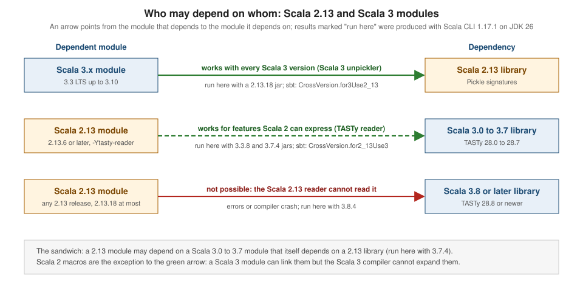

Scala 2 & Scala 3 Compatibility
|
This content was generated with the assistance of AI and should be verified against the official documentation before being relied on in production. |
This page is written against Scala 3.10 (3.10.0, released 2026-10-12) and every program and command on it was run with Scala CLI 1.17.1 on JDK 26, checked on 2026-10-16. Where the example needed another compiler, it was produced with Scala 2.13.18, 3.3.8, 3.7.4 or 3.8.4 from Maven Central through the same Scala CLI. Nothing was run on 3.9 LTS for this page; it is on the same side of the line as 3.10, and the line that matters is the one between 3.7 and 3.8, explained below.
Scala 3 was designed so that a project can move from Scala 2.13 one module at a time. That is possible because of four
separate compatibility promises, each with its own limits, and this page walks through them with small programs that
show where each promise holds and where it ends. The versions of Scala 3 against each other (the TASTy matrix, MiMa,
-source) are the subject of
Versions, Compatibility & JDKs and are not
repeated. How to actually port code is in
Migrating from Scala 2, and the line-by-line list of what
no longer compiles is in
Incompatibilities & Dropped Features.
The examples use the trailhead scenario: trails with a length and a difficulty, and a planner that estimates walking time.
The four levels at a glance
The official migration guide organizes the question into four levels, and each one has a different answer.
| Level | Question | Short answer |
|---|---|---|
Source |
Can Scala 2.13 source be compiled by Scala 3? |
Mostly yes, with a corpus of known incompatibilities; the reverse is not true because Scala 3 source uses new syntax and features |
Classpath |
Can a module use a library compiled by the other version? |
Scala 3 can always use 2.13 libraries; Scala 2.13 can use Scala 3 libraries only up to Scala 3.7, and only for features Scala 2 can express |
Runtime |
Can both run on one JVM? |
Yes; they share the same application binary interface (ABI), so classes from both load in one class loader |
Metaprogramming |
Do Scala 2 macros work in Scala 3? |
No; Scala 2 macros must be rewritten, and Scala 3 can only link to them |

Source level
Scala 3 is an improved version of the Scala 2.13 language, and a large part of the Scala 2.13 language is still valid. The proof is a program written in the Scala 2 brace style that uses only the common subset: a sealed trait, case objects, a case class and a pattern match.
package trailhead
sealed trait Difficulty
object Difficulty {
case object Easy extends Difficulty
case object Hard extends Difficulty
}
final case class Trail(name: String, lengthKm: Double, difficulty: Difficulty)
object Planner {
def hours(t: Trail): Double = t.lengthKm / 4.0
def describe(t: Trail): String = t.difficulty match {
case Difficulty.Easy => s"${t.name}: easy, ${hours(t)} h"
case Difficulty.Hard => s"${t.name}: hard, ${hours(t)} h"
}
def main(args: Array[String]): Unit =
println(describe(Trail("Pico Alto", 12.0, Difficulty.Hard)))
}The same file was run twice, once per compiler, with
scala run Shared.scala -S 2.13.18 --main-class trailhead.Planner and the same command with -S 3.10.0. Both runs print:
Pico Alto: hard, 3.0 hSource that compiles under both compilers is the basis of cross-building. It is also the reason -Xsource:3 exists in
the Scala 2.13 compiler: it makes 2.13 accept some Scala 3 forms and warn about the ones that will break, so that code
can be prepared before the switch (see
Migrating from Scala 2).
Not everything survives. The next file collects three common Scala 2 constructs. Scala 2.13.18 accepts them (with a deprecation warning), but Scala 3.10.0 does not:
object Old {
def greet(name: String) {
println("hello " + name)
}
val tag = 'trail
def sum(xs: Int*) = xs.sum
def main(args: Array[String]): Unit = {
greet("Ana")
println(sum(List(1, 2, 3): _*))
}
}Scala 3.10.0 reports (paths shortened):
-- [E040] Syntax Error: Old.scala:4:26
4 | def greet(name: String) {
| ^
| '=' expected, but '{' found
-- Error: Old.scala:8:12
8 | val tag = 'trail
| ^
|symbol literal 'trail is no longer supported,
|use a string literal "trail" or an application Symbol("trail") instead,
|or enclose in braces '{trail} if you want a quoted expression.
|For now, you can also `import language.deprecated.symbolLiterals` to accept
|the idiom, but this possibility might no longer be available in the future.
-- Warning: Old.scala:14:31
14 | println(sum(List(1, 2, 3): _*))
| ^
|The syntax `x: _*` is no longer supported for vararg splices; use `x*` instead
|This construct can be rewritten automatically under -rewrite -source 3.4-migration.
2 errors foundThe three messages show the three kinds of difference. Procedure syntax (a method body without =) is a removed
feature and a hard error. Symbol literals are removed too, and the message names the replacement and a temporary escape.
The : _* splice has a new syntax, and the compiler can rewrite it automatically with -rewrite and a migration
-source, the mechanism covered in
Versions, Compatibility & JDKs. Among the other
constructs the reference lists as dropped are existential types, early initializers, XML literals and Scala 2 macros;
the complete table with the Scala 3 replacement of each is in
Incompatibilities & Dropped Features.
The direction matters. Scala 3 source cannot be compiled by Scala 2.13 as soon as it uses an indentation-based block,
an enum, a given or any other new feature. The migration guide’s observation is that this costs little, because the
compiled Scala 3 artifact can still be consumed by Scala 2.13 under limits, as the next section shows.
Classpath level
A module uses public types and methods defined in another module. That works as long as the compiler can read their signatures from the compiled artifact. Scala 2 stores signatures in the Pickle format; Scala 3 stores them in TASTy, a much richer format that holds the whole typed tree. Each compiler has a reader for the other’s format.
Scala 3 reads Scala 2.13: the unpickler
The Scala 3 compiler reads Scala 2.13 Pickle signatures, so a Scala 3 module can depend on a Scala 2.13 artifact. The migration guide notes that this reader has been tested in the community build for years. To see it work, a small library was compiled with Scala 2.13.18. It has a case class, a type class with an implicit instance, an implicit class for syntax, and a trait with concrete members (the library also contains a macro, used in the metaprogramming section below):
package trailhead2
final case class Trail(name: String, lengthKm: Double)
trait Show[A] { def show(a: A): String }
object Show {
implicit val trailShow: Show[Trail] = new Show[Trail] {
def show(t: Trail): String = s"${t.name} (${t.lengthKm} km)"
}
}
object Syntax {
implicit class ShowOps[A](val a: A) extends AnyVal {
def shown(implicit s: Show[A]): String = s.show(a)
}
}
trait Walker {
val pace: Double = 4.0
var steps: Int = 0
def walk(km: Double): Double = { steps += 1; km / pace }
def hello: String = s"walker at pace $pace"
}The library was packaged with scala compile ... -S 2.13.18 -d jars/lib2.jar and a Scala 3.10.0 program was run
against it with --jar jars/lib2.jar:
import trailhead2.*
import trailhead2.Syntax.*
class Hiker extends Walker:
override val pace: Double = 5.0
override def walk(km: Double): Double = super.walk(km) + 0.25
@main def use(): Unit =
val t = Trail("Pico Alto", 12.5)
println(t.shown)
println(summon[Show[Trail]].show(t))
val h = Hiker()
println(h.walk(10))
println(h.hello)
println(h.steps)Pico Alto (12.5 km)
Pico Alto (12.5 km)
2.25
walker at pace 5.0
1Four Scala 2 features crossed over unchanged. The Scala 2 implicit val is found by the Scala 3 summon, the
implicit class provides its extension method, and a Scala 3 class can extend a Scala 2 trait that has fields and
concrete methods; the overridden pace is visible inside the trait’s hello method as expected. This is why a Scala
3 migration can start from the leaves of the dependency graph and does not wait for every library to be ported.
The standard library is the biggest example of the principle. Up to Scala 3.7 (including the 3.3 LTS line) Scala 3
used the Scala 2.13 standard library as its own. From Scala 3.8 scala-library is compiled by Scala 3 itself, which
is why the version number reported at run time changes; the details are in
Versions, Compatibility & JDKs. In either case
the build tool provides the standard library, and you should not add it manually.
In sbt the dependency of a Scala 3 project on a published 2.13 library is declared with a cross-version marker, shown here without having been run (sbt is not installed on the machine used for this page):
// build.sbt (sbt 1.5 or higher)
lazy val foo = project.in(file("foo"))
.settings(
scalaVersion := "3.3.8",
libraryDependencies +=
("org.bar" %% "bar" % "1.0.0").cross(CrossVersion.for3Use2_13)
)CrossVersion.for3Use2_13 makes sbt resolve bar_2.13 instead of bar_3. In Scala CLI the same choice is
spelled out in the coordinates: a single colon (org:name_2.13:version) selects the artifact exactly as named, and the
parser-combinators example on
Versions, Compatibility & JDKs runs that way.
Maven and Gradle users spell out the _2.13 suffix in the artifact id the same way; see
Java: Build & Tooling for the Maven and Gradle basics.
Scala 2.13 reads Scala 3: the TASTy reader
The Scala 2.13 compiler can read the TASTy of a Scala 3 library when it is started with -Ytasty-reader. The reader
was designed as a migration aid: it broke the chicken-and-egg problem of the ecosystem bootstrap, where libraries did
not want to abandon Scala 2.13 users and applications could not move until their dependencies did. It is not a
permanent compatibility layer, and it is limited in two ways.
Limit 1: features. The reader supports the traditional language features and these Scala 3 ones: enumerations,
intersection types, opaque type aliases, type lambdas, the new contextual abstraction syntax, open classes with
inheritance of super traits, and export clauses. It supports top-level definitions and extension methods only
partially, and it does not support context functions, polymorphic function types, trait parameters, @static, @alpha,
functions and tuples larger than 22 parameters, match types, union types, multiversal equality (unless explicit),
inline (including Scala 3 macros) and kind polymorphism.
To see this, a Scala 3 library was written with an enum, an opaque type, a case class and an extension method:
package trailhead
enum Difficulty:
case Easy, Hard
object Units:
opaque type Km = Double
object Km:
def apply(d: Double): Km = d
extension (k: Km) def value: Double = k
import Units.Km
final case class Trail(name: String, length: Km, difficulty: Difficulty)
object Trails:
extension (t: Trail) def hours: Double = t.length.value / 4.0
def describe(t: Trail): String = s"${t.name}: ${t.difficulty}, ${t.hours} h"Source: State of the TASTy reader and Scala 2.13 and Scala 3 compatibility, Scala 3 Migration Guide: The Scala 2.13 TASTy Reader, Scala 3.8 released
The opaque type is deliberately inside an object. The first version of this library defined opaque type Km at the top
level, and the Scala 2.13 compiler then failed with "not found: value Km": top-level definitions end up in a synthetic
trailhead$package object that the reader only partially understands. A Scala 2.13.18 program that uses the
library:
import trailhead._
object Main {
def main(args: Array[String]): Unit = {
val t = Trail("Pico Alto", Units.Km(12.0), Difficulty.Hard)
println(Trails.describe(t))
}
}Source: State of the TASTy reader and Scala 2.13 and Scala 3 compatibility, Scala 3 Migration Guide: The Scala 2.13 TASTy Reader, Scala 3.8 released
It was run with
scala run Main.scala -S 2.13.18 -O -Ytasty-reader --jar jars/lib-3.3.8.jar --dep org.scala-lang:scala3-library_3:3.3.8 --main-class Main.
The scala3-library_3 dependency is what a published Scala 3 library brings transitively; with only the jar on the
classpath the compiler cannot find scala.annotation.internal. With the library compiled by each of three Scala 3
versions, the results were:
| Library compiled with | Scala 2.13.18 result |
|---|---|
3.3.8 |
compiles and prints |
3.7.4 |
compiles and prints |
3.8.4 |
fails: |
(On JDK 26 the 3.3.8 and 3.7.4 compilers also print a sun.misc.Unsafe warning from their library; it is not part of
the result and is omitted above.)
Features outside the supported list fail with a message that says what is wrong. A second Scala 3 library file, compiled with 3.3.8, declares one method per unsupported feature:
package trailhead
object Adv:
inline def twice(inline n: Int): Int = n * 2
def parse(x: Int | String): String = x.toString
def withCtx(f: Int ?=> String): String = f(using 3)Source: State of the TASTy reader and Scala 2.13 and Scala 3 compatibility, Scala 3 Migration Guide: The Scala 2.13 TASTy Reader, Scala 3.8 released
Calling each of them from a Scala 2.13.18 program produced one error per call:
Adv.scala:3: error: Unsupported Scala 3 union in parameter value x; found in method parse in object trailhead.Adv.
println(trailhead.Adv.parse(42))
^
Adv2.scala:3: error: Unsupported Scala 3 inline method twice; found in object trailhead.Adv.
println(trailhead.Adv.twice(4))
^
Adv3.scala:3: error: Unsupported Scala 3 context function type in parameter value f: Int ?=> String; found in method withCtx in object trailhead.Adv.
println(trailhead.Adv.withCtx(_ => "x"))
^A library author who wants Scala 2.13 consumers therefore keeps the public API inside the supported set: no inline
methods, no union or intersection-with-match types in signatures, no context-function parameters. The features themselves
are explained in
Inline,
Union & Intersection Types and
Context Functions.
Limit 2: versions. The reader is part of the Scala 2.13 compiler, so it is frozen at the TASTy version of the 2.13 release you run. The Scala team’s 2026 post on the state of the TASTy reader lists the milestones for stable TASTy support:
| Scala 2.13 release | Newest Scala 3 minor it can read with -Ytasty-reader |
|---|---|
2.13.6 |
3.0 |
2.13.7 |
3.1 |
2.13.9 |
3.2 |
2.13.11 |
3.3 |
2.13.13 |
3.4 |
2.13.15 |
3.5 |
2.13.16 |
3.6 |
2.13.17 |
3.7 |
A release between two rows has the support of the row above it, so 2.13.18 reads libraries up to 3.7, which is
exactly what the runs above show. The reader will never support Scala 3.8 and later, because Scala 3.8 made the
standard library a Scala 3 artifact. That brings a dependency on features that the Scala 2 reader cannot represent:
union types (from explicit nulls) and capture checking, and the scala3-library_3 replacements that used to patch
parts of the standard library with transparent inline forms were removed in favor of direct changes to the library.
Compiling against the Scala 3 standard library from Scala 2 is also a classpath problem: both compilers assume the
scala-library on the classpath matches the compiler version, and sbt rejects a build in which a 2.13 project pulls
in scala-library 3.8.x through for2_13Use3, because it would then look for scala-reflect 3.8.x, an artifact that
does not exist. This is the update error "Error downloading org.scala-lang:scala-reflect:3.8.x" that sbt 1.12.3 users
met when the 2.13 and 3 "sandwich" stopped being bidirectional.
The existing page on
Versions, Compatibility & JDKs shows the same
effect from the other side: libraries compiled by 3.9.0 crash the 2.13.18 compiler, and a 3.10.0 library fails with
could not find package scala.deriving.
A second run with 2.13.18 checked the limit across releases. A small library with a case class and an object compiled and
ran when it was built by 3.7.4, and failed to compile when it was built by 3.8.3, 3.9.0 or 3.10.0, even with
scala3-library_3 of the same version on the class path ("could not find package scala.annotation.internal", or
scala.deriving for 3.10.0). The 3.x scala-library that holds those packages cannot be added as a dependency: it has
the same coordinates as the 2.13 one, and 2.13.18’s version wins. Only a library whose API needs nothing from the Scala 3
standard library got through, such as the mixed macro library on
Migrating from Scala 2 built by 3.10.0. That is luck, not
support: a plain class built by 3.8.3 or 3.9.0 crashed the compiler with no symbol at Addr(25).
The practical consequences, as stated by the Scala team, are:
-
Scala 3 consuming Scala 2.13 artifacts is a hard requirement of the migration model and will not change.
-
Scala 2.13 consuming Scala 3 artifacts through the TASTy reader works for Scala 3.7 and below only.
-
A library that must serve Scala 2.13 users and Scala 3 users should cross-compile for both and publish a native artifact for each. If it cannot, it should publish its Scala 3 artifact with the 3.3 LTS compiler, which is supported until at least the second quarter of 2027, and announce the end of Scala 2.13 support before moving to 3.9 LTS.
-
Scala 2.13 applications that rely on the reader should keep those dependencies at Scala 3.7 or below and plan to migrate their own modules.
-
Prefer 3.3 LTS to 3.4 to 3.7 for that purpose: Scala 3.7 is not expected to receive further releases.
The sbt spelling of the 2.13 side is shown below, not run here (no sbt):
// build.sbt (sbt 1.5 or higher)
lazy val foo = project.in(file("foo"))
.settings(
scalaVersion := "2.13.18",
scalacOptions += "-Ytasty-reader",
libraryDependencies +=
("org.bar" %% "bar" % "1.0.0").cross(CrossVersion.for2_13Use3)
)The sandwich
Because both directions work (up to Scala 3.7), a Scala 3 module may sit between two Scala 2.13 modules during a
migration. The rule is that every library must resolve to a single binary version: lib-foo_3 and lib-bar_2.13 can
share a classpath, lib-foo_3 and lib-foo_2.13 cannot. A library maintainer should not publish a Scala 3 library
that depends on another Scala 2.13 library (apart from the standard library) unless they know what they are doing,
because users could end up with two conflicting copies of the same library.
The sandwich was built here. A middle module compiled with Scala 3.7.4 uses the 2.13 library from the previous section
and defines a Scala 3 given and a using clause:
package trailhead3
import trailhead2.*
trait Rating[A]:
def stars(a: A): Int
given Rating[Trail] with
def stars(t: Trail): Int = if t.lengthKm > 10 then 3 else 1
object Mid:
def describe(t: Trail)(using s: Show[Trail], r: Rating[Trail]): String =
s"${s.show(t)} ${"*" * r.stars(t)}"
def describeDefault(t: Trail): String = describe(t)A Scala 2.13.18 module on top, using both jars and -Ytasty-reader, calls Mid.describeDefault:
import trailhead2._
import trailhead3._
object Top {
def main(args: Array[String]): Unit = {
val t = Trail("Pico Alto", 12.5)
println(Mid.describeDefault(t))
}
}Pico Alto (12.5 km) ***The using parameters were resolved inside the Scala 3 module, from the Scala 2 implicit val and the Scala 3
given, and the Scala 2 caller only saw a plain method. The new contextual syntax appears in the reader’s supported
list; see
Givens & Using Clauses.
Runtime level
Scala 2.13 and Scala 3 share the same ABI, the representation of Scala code in bytecode (and in Scala.js IR). Compiling the same source with the two compilers therefore produces very similar bytecode, class files from both are loaded by the same JVM class loader, and Scala.js IR files from both are linked by the same Scala.js linker. The program in the previous sections is the practical proof: Scala 2.13 classes and Scala 3 classes were loaded together by one JVM in every run. The guide’s conclusion is that the move from 2.13 to 3 is safe in terms of run-time crashes and performance.
The shared ABI does not mean identical bytecode. The guide mentions that lazy val initialization has been improved. To
look at the difference, a class with a lazy val was compiled by each compiler and inspected with javap -p:
package trailhead
class Peak(val name: String) {
lazy val label: String = name.toUpperCase
}-- Scala 2.13.18
public class trailhead.Peak {
private java.lang.String label;
private final java.lang.String name;
private volatile boolean bitmap$0;
public java.lang.String name();
private java.lang.String label$lzycompute();
public java.lang.String label();
public trailhead.Peak(java.lang.String);
}
-- Scala 3.10.0
public class trailhead.Peak {
private static final java.lang.invoke.VarHandle label$lzy1$lzyHandle;
private final java.lang.String name;
private volatile java.lang.Object label$lzy1;
public trailhead.Peak(java.lang.String);
private static {};
public java.lang.String name();
public java.lang.String label();
private java.lang.Object label$lzyINIT1();
}The public methods, name() and label(), are identical, which is what binary compatibility is about. Only the
private machinery differs: Scala 2 uses a label$lzycompute method guarded by a bitmap$0 flag, Scala 3 keeps the
value in a field and initializes it through a VarHandle and a label$lzyINIT1 method. A Scala 2 library
and a Scala 3 library can therefore both define lazy vals and be used together; only code that reached for the private
fields through reflection would notice. Laziness itself is covered in
Laziness.
Runtime behavior is not entirely the same, because the guide points out that some new features help optimize a program:
opaque type aliases (no wrapper object, see
Opaque Types & Value Classes), inline methods
and the @threadUnsafe annotation for lazy vals that do not need synchronization.
Source: Scala 3 Migration Guide: Runtime
Metaprogramming level
A macro is expanded by the compiler while it compiles the call. The Scala 2.13 macro API is tied to the internals of the 2.13 compiler, so the Scala 3 compiler cannot expand any Scala 2.13 macro. Scala 3 replaced the feature with a design meant for stability: inline methods, compile-time operations, quoted code and reflection over the AST, covered in Metaprogramming Overview.
Using a Scala 2 macro from Scala 3
A Scala 3 module can depend on a Scala 2.13 artifact that contains macros. The dependency resolves and types check; the macro call is where it fails. The library compiled earlier also has a small Scala 2 macro that returns the name of the expression it receives:
package trailhead2
import scala.language.experimental.macros
import scala.reflect.macros.blackbox
object Macros {
def nameOf(x: Any): String = macro MacrosImpl.nameOfImpl
}
object MacrosImpl {
def nameOfImpl(c: blackbox.Context)(x: c.Expr[Any]): c.Expr[String] = {
import c.universe._
val n = x.tree match {
case Ident(TermName(s)) => s
case other => other.toString
}
c.Expr[String](Literal(Constant(n)))
}
}(It needs org.scala-lang:scala-reflect:2.13.18 to compile.) A Scala 3.10.0 program that calls it:
import trailhead2.*
@main def useMacro(): Unit =
val summit = 3718
println(Macros.nameOf(summit))-- Error: UseMacro.scala:5:10
5 | println(Macros.nameOf(summit))
| ^
|Scala 2 macro cannot be used in Scala 3. See https://docs.scala-lang.org/scala3/reference/dropped-features/macros.html
|To turn this error into a warning, pass -Xignore-scala2-macros to the compiler
1 error found
Compilation failedThe compiler offers a way to turn the error into a warning. It is useful for type checking code in a migration, but the
output is incomplete, as the run with -Xignore-scala2-macros shows:
-- Warning: UseMacro.scala:5:10
5 | println(Macros.nameOf(summit))
| ^
|Scala 2 macro cannot be used in Scala 3, this call will crash at runtime. See https://docs.scala-lang.org/scala3/reference/dropped-features/macros.html
1 warning found
Exception in thread "main" scala.MatchError: Reached unexpanded Scala 2 macro call to trailhead2.Macros.nameOf compiled with -Xignore-scala2-macros. (of class java.lang.String)
at UseMacro$package$.useMacro(UseMacro.scala:5)
at useMacro.main(UseMacro.scala:3)When this error shows up in a project, there is usually no choice but to move to a version of the macro library compiled by Scala 3. The Scala team keeps a migration status list of open-source macro libraries to help find them.
Rewriting a macro
A Scala 2 macro has to be rewritten from the ground up. Before reaching for the AST, the migration guide asks four
questions: can inline and the operations of scala.compiletime do the job, can a simpler and safer expression-based
macro do it, does the code really need to touch the AST, and can a match type be the return type. The macro above is
one of those cases that needs no macro at all: scala.compiletime.codeOf returns the source text of an expression.
import scala.compiletime.codeOf
@main def codeOfDemo(): Unit =
val summit = 3718
println(codeOf(summit))
println(codeOf(summit + 1))summit
summit + 1That is the same result as the Scala 2 macro and also works for larger expressions. The compile-time operations are on Compile-Time Operations, and real macros with quotes and splices on Macros: Quotes & Splices.
A library that must keep its macros available to both lines has two techniques, described in two tutorials of the
migration guide: cross-building (a separate macro implementation per Scala version in version-specific source
directories) and macro mixing, in which a Scala 3 artifact contains the Scala 2 macro implementation too. The benefit of
mixing is that consumers who use -Ytasty-reader can still use the macros. Both are summarized in
Migrating from Scala 2.
Reflection and scala-reflect
scala-reflect is the reflection library of the Scala 2 compiler, and its universe is built on the compiler’s own
symbol table. It does not know the Scala 3 standard library or Scala 3 classes. Two behaviors were observed.
At compile time, TypeTag is materialized by the Scala 2 compiler and does not exist in Scala 3. A Scala 3 program with
typeOf[Trail] fails on both 3.3.8 and 3.10.0:
-- [E172] Type Error: R.scala:10:27
10 | println(typeOf[List[Int]])
| ^
| No TypeTag available for List[Int]At run time, the old scala.reflect.runtime.universe can be put on the classpath of a Scala 3 project with
//> using dep org.scala-lang:scala-reflect:2.13.18, and a runtime mirror can describe a class through its
Java signature. The same program was run by three compilers:
//> using dep org.scala-lang:scala-reflect:2.13.18
import scala.reflect.runtime.universe
import scala.reflect.ClassTag
case class Trail(name: String, km: Double)
@main def refl2(): Unit =
val mirror = universe.runtimeMirror(classOf[Trail].getClassLoader)
val sym = mirror.classSymbol(classOf[Trail])
println(sym.isCaseClass)
println(sym.primaryConstructor.asMethod.paramLists.flatten.map(_.name))
println(summon[ClassTag[Trail]].runtimeClass.getSimpleName)| Compiled and run with | Result |
|---|---|
Scala 2.13.18 (written with |
|
Scala 3.3.8 |
|
Scala 3.10.0 |
crashes with |
On 3.3.8 the mirror is working from the Java class file only, so isCaseClass is false: Scala 3 classes carry no
Scala 2 pickle. On 3.10.0 the 2.13 reflection library fails while initializing its own symbol table; it
was not investigated further, but the Scala 3 standard library of 3.8 and later, which no longer matches what
scala-reflect 2.13 expects, is the likely cause. ClassTag is a normal Scala 3 feature and keeps working on every version; only the
Scala 2 reflection universe is affected. Treat scala-reflect as a Scala 2 compiler artifact: do not add it to a Scala 3
project for runtime reflection. For compile-time reflection, use
Reflection with quotes.reflect; for runtime
needs, use Java reflection or a type class that the compiler derives (see
Type Class Derivation).
Putting it together
Each row below is a decision a team faces during a migration, with the level it depends on.
| Situation | What to do | Level |
|---|---|---|
An application on Scala 2.13 wants to start moving |
Prepare with |
source, classpath |
A Scala 3 module needs a 2.13 library |
Depend on the |
classpath, metaprogramming |
A Scala 2.13 module needs a Scala 3 library |
Possible only for libraries built by Scala 3.7 or older, with |
classpath |
A library serves both Scala lines |
Cross-compile natively for 2.13 and Scala 3; failing that, publish Scala 3 with 3.3 LTS and avoid |
classpath |
A Scala 2 macro library is on the classpath of a Scala 3 project |
Move to a Scala 3-compiled release; |
metaprogramming |
A project uses |
Replace with |
metaprogramming |
Worried about performance or crashes after moving |
No new risk from the ABI; lazy val internals differ but the public bytecode does not |
runtime |
Scala.js and Scala Native follow the same rule at the IR level; the platform tooling is on Scala.js & Scala Native. The build-tool side, with sbt cross-building, is covered by sbt & Build Tools, and calling between Scala and Java is a different boundary, covered on Using Java from Scala and Calling Scala from Java.
Where the books are outdated
-
Migration material written during the Scala 3.0 to 3.7 years, including the migration guide pages cited here, describes the 2.13 and 3 "sandwich" as working in both directions. It no longer does: the Scala 2.13 TASTy reader supports Scala 3 libraries built by 3.7 or older and not from 3.8 on, and the only direction that is guaranteed is Scala 3 using 2.13.
-
Examples written for 2.13.11 with Scala 3.3.1 in the migration guide’s own build snippets pin versions that are two lines behind today’s; the
CrossVersionmechanics are unchanged but the versions should be today’s (3.3.8 LTS or 3.9 LTS, 2.13.18). -
Older material says that Scala 3 uses the Scala 2.13 standard library. That holds only up to 3.7; from 3.8 the library is compiled by Scala 3 and its version equals the compiler version.
-
Material from the Scala 2 era presents
scala-reflectandTypeTagas the standard way to inspect types. In Scala 3TypeTagdoes not exist and the 2.13 universe fails on Scala 3.10, as the run above shows. -
Material that treats
-Xignore-scala2-macrosas a way to keep using Scala 2 macros is wrong: the flag produces code that crashes at run time.
Pitfalls
-
A TASTy reader error is a producer error. The library was built by a Scala 3 version that the 2.13 reader does not support (3.8 or later); changing the application code does not help. Use a library build from 3.7 or older, or move the module to Scala 3.
-
"could not find package scala.annotation.internal" has two causes. With a 3.7 or older library it means that the jar is used alone and
scala3-library_3is missing; a published library brings that dependency itself. With a 3.8 or newer library the message persisted here even withscala3-library_3on the classpath, because the package lives in the 3.xscala-library, which the 2.13scala-libraryreplaces on the class path. -
A top-level definition in a Scala 3 library may not be visible from Scala 2. It lands in a synthetic
<file>$packageobject that the reader understands only partially; put definitions meant for Scala 2 users in objects. -
A unified classpath is a single binary version per library. Two copies of the same library with different suffixes cannot be resolved by the build tool and fail at run time in ways that are hard to diagnose.
-
Using
-Xignore-scala2-macrosto get a project compiling is a stopgap. The call site crashes at run time with aMatchError. -
Do not rely on
isCaseClassand the other Scala 2 reflection flags for Scala 3 classes. They reportfalseon 3.3 and the universe crashes on 3.10. -
Do not mix
scala-libraryversions. 2.13 and 3.8 expect an exactly matchingscala-libraryon the classpath; if eviction replaces it, the compiler may crash or emit references to members that do not exist.
What was run and what was not
All the examples on this page, with the exceptions below, were run with Scala CLI 1.17.1 on JDK 26 with the compilers
named in each section: 2.13.18, 3.3.8, 3.7.4, 3.8.4, 3.10.0. This includes the shared-subset program on both compilers,
the Scala 2 constructs that fail on Scala 3, the Scala 2.13 library used from Scala 3, the TASTy reader runs with
three library versions and with the three unsupported features, the sandwich, the javap comparison, the macro runs with
and without -Xignore-scala2-macros, the codeOf replacement and the scala-reflect runs. All jars were created with
scala compile -d in a scratch directory and passed with --jar.
Not run here: the sbt snippets with CrossVersion.for3Use2_13 and CrossVersion.for2_13Use3 (sbt is not installed on
the machine used for this page), the sbt 1.12.3 scala-reflect resolution error (quoted from the Scala team’s post), and
the supported and unsupported feature lists and the TASTy milestone table of the reader (quoted from the official
documentation and checked only for the versions mentioned above).